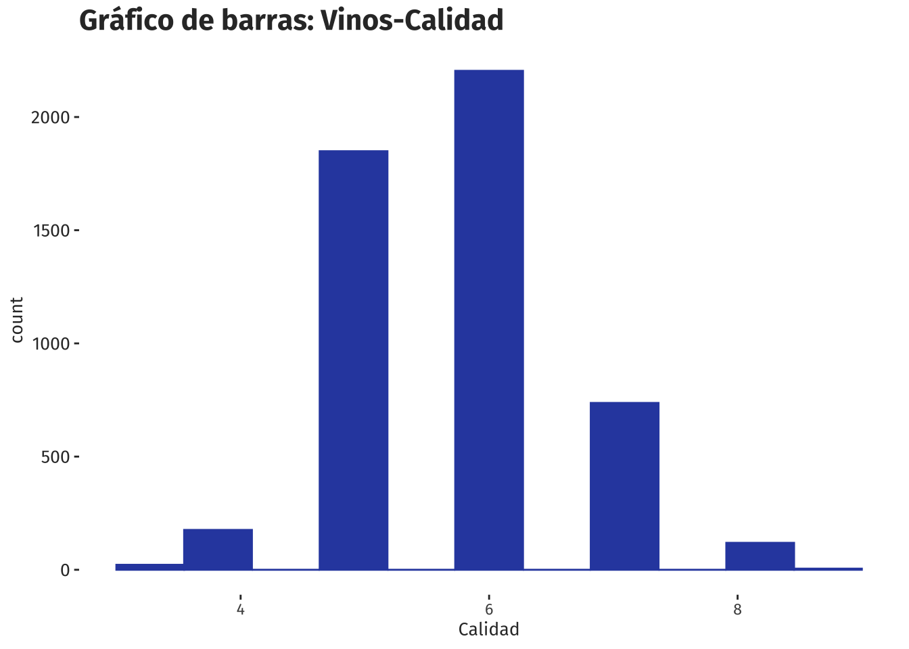
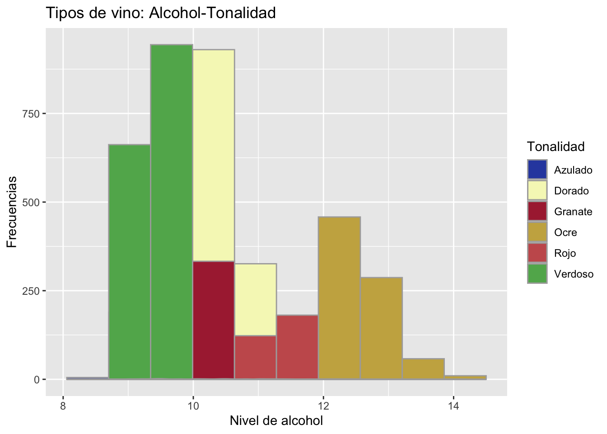
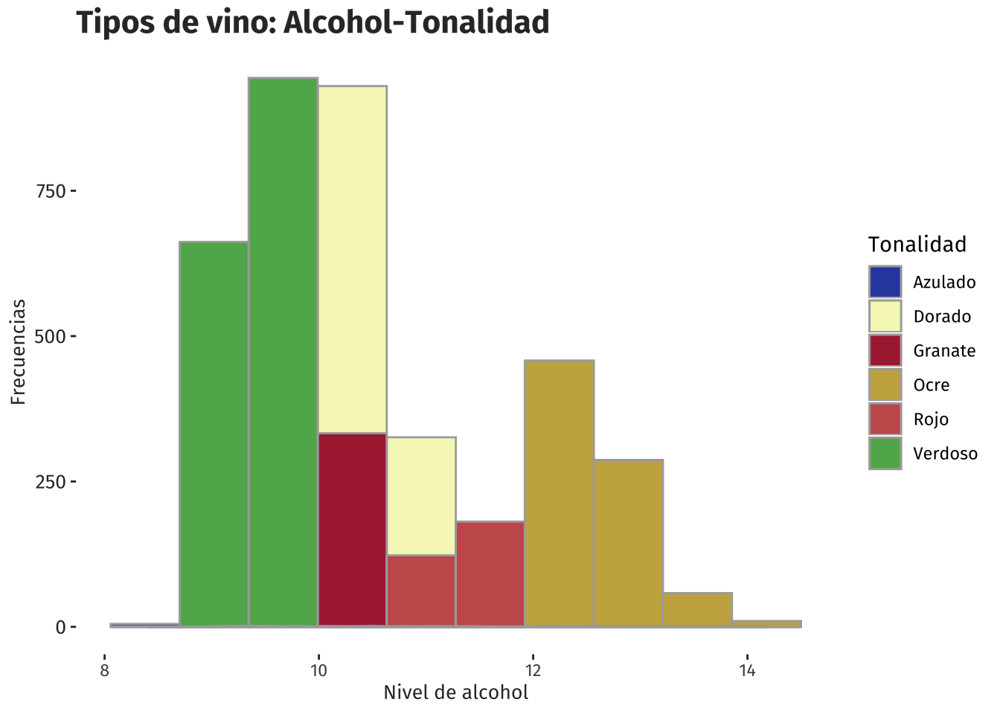
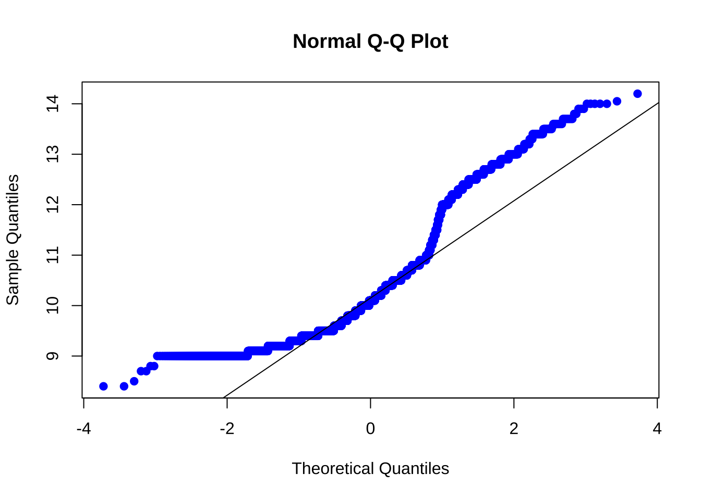
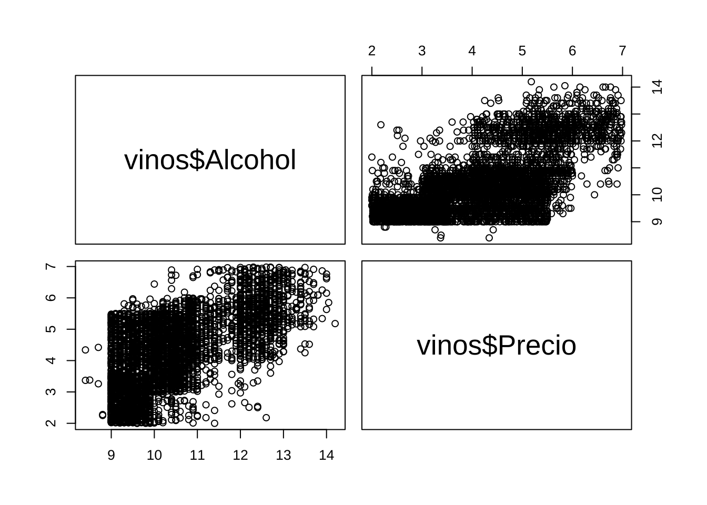
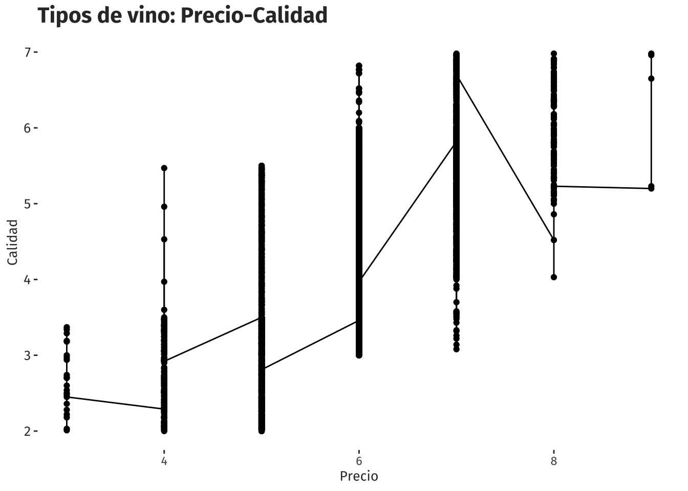
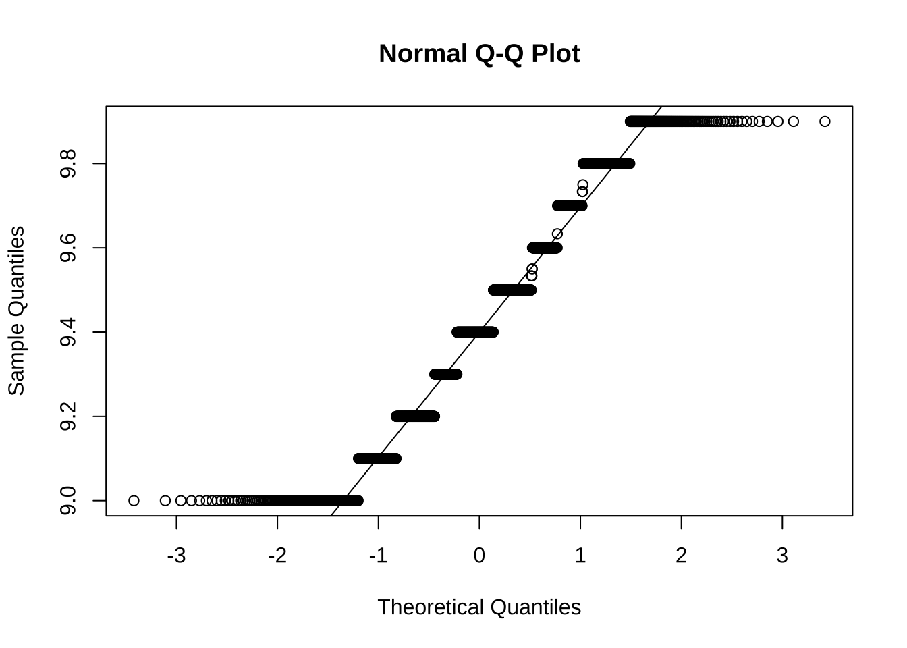
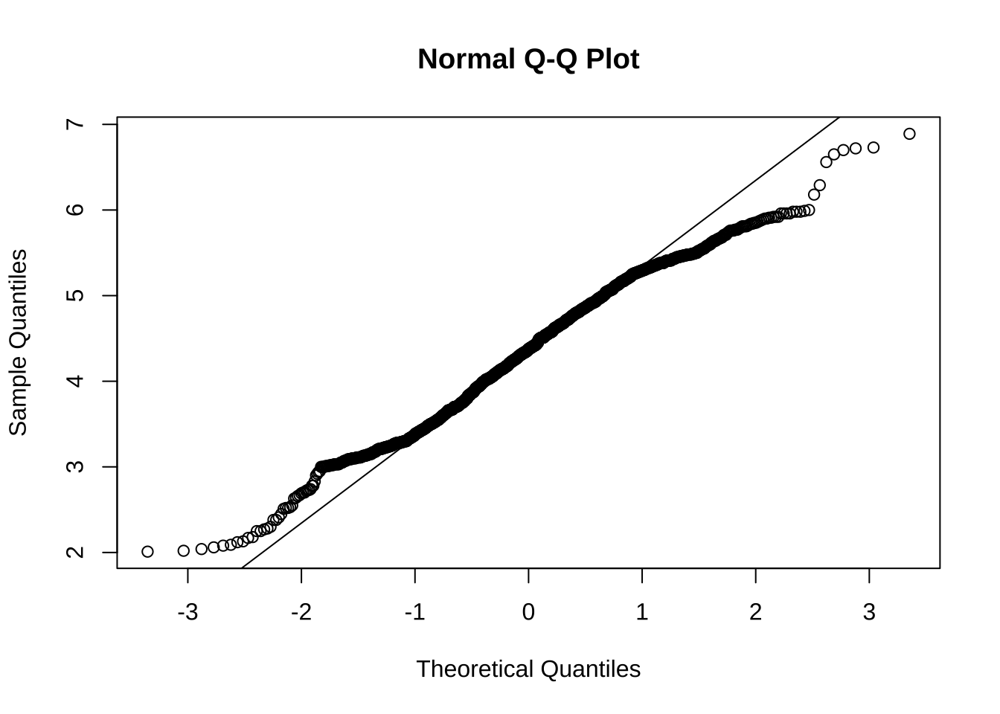
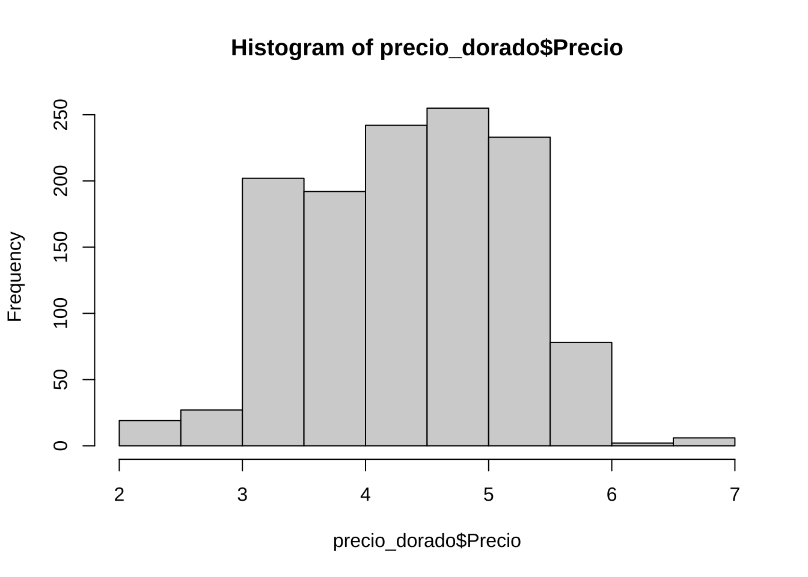
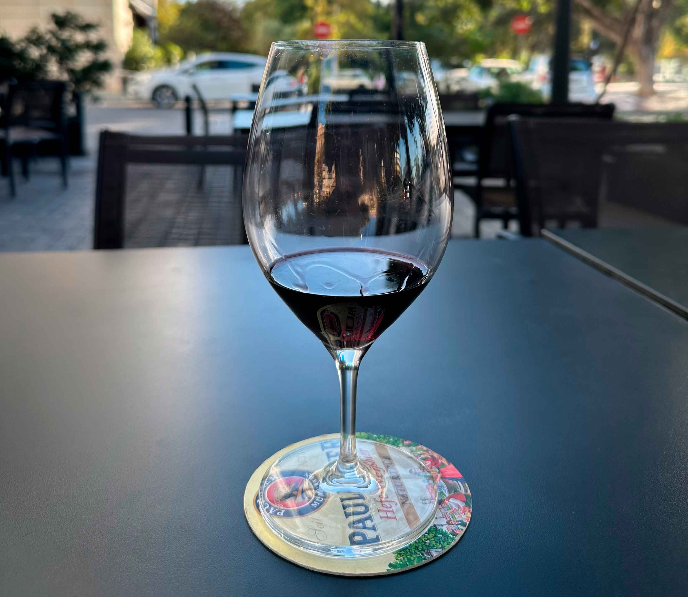

library(dplyr)
library(ggplot2)
library(nortest)
library(showtext)El objetivo es extraer información útil a partir de un análisis estadístico para este marco de datos.
El archivo VINOS.csv recopila datos sobre el precio de venta y otras características de una muestra aleatoria de 6496 tipos diferentes de vinos de la D.O de Utiel-Requena, Comunidad Valenciana, España.
1.- Calidad del vino
Se cargan las librerías:
Se cargan las fuentes de texto:
font_add_google("Luckiest Guy","ramp")
font_add_google("Bebas Neue","beb")
font_add_google("Fira Sans","fira")
font_add_google("Raleway","ral")
font_add_google("Bitter","bit")
showtext_auto()Se carga la base de datos:
vinos <- read.csv2("VINOS.csv")Se verifica previamente la información básica de los datos (tipo de variables y la dimensión):
str(vinos)'data.frame': 5112 obs. of 8 variables:
$ X : int 1 2 3 4 5 6 7 8 9 10 ...
$ Tipo : chr "Tinto" "Tinto" "Tinto" "Tinto" ...
$ pH : num 3.51 3.2 3.26 3.16 3.51 3.51 3.3 3.39 3.36 3.35 ...
$ Sulfatos : num 0.56 0.68 0.65 0.58 0.56 0.56 0.46 0.47 0.57 0.8 ...
$ Alcohol : num 9.4 9.8 9.8 9.8 9.4 9.4 9.4 10 9.5 10.5 ...
$ Tonalidad: chr "Azulado" "Azulado" "Azulado" "Azulado" ...
$ Calidad : int 5 5 5 6 5 5 5 7 7 5 ...
$ Precio : num 3.5 2.01 3.27 3.46 2.14 3.36 3.18 5.82 5.32 3.89 ...- PH, Sulfatos, Alcohol, Tobalidad y Precio, son variables numericas.
- X y Calidad son variables de tipo entero.
- Tipo, variable de tipo char.
Se ejecuta la instrucción “summary” para conocer algunos valores estadísticos:
summary(vinos$Calidad) Min. 1st Qu. Median Mean 3rd Qu. Max.
3.00 5.00 6.00 5.75 6.00 9.00 Se traza un gráfico de barras:
ggplot(vinos, aes(x=Calidad, fill=Tonalidad)) +
geom_histogram(bins = 8, colour='white', size=.1) +
ggtitle("Gráfico de barras: Vinos-Calidad") +
scale_fill_manual(values=c("#304bae", "#f5f7c0","#ab2a3e", "#c9af4f","#c85c5c", "#61b15b"))+
theme(
text = element_text(family = "fira"),
panel.grid = element_blank(),
plot.title = element_text(size = 16, colour = "gray20", face="bold"),
axis.text.y = element_text(size = 10, colour = "gray20"),
axis.title.x = element_text(size = 10, colour = "gray20"),
axis.title.y = element_text(size = 10, colour = "gray20"),
panel.background = element_rect(fill = 'white', color = 'white')
)
Entre los valores 5 y 6 se encuentra la mayor concentración de la calidad de los vinos, con una mediana de 6 y con frecuencias superior a 1500.
Tabla de frecuencias (Calidad de vinos):
calidad <- vinos$Calidad
calidad <- table(calidad)
calidadcalidad
3 4 5 6 7 8 9
22 176 1849 2204 737 119 5 Se seleccionan las variables Tipo y Calidad en un marco de datos de nombre calidad_t con la finalidad de hacer una tabla de frecuencias usando la función table().
calidad_t <- select(vinos, Tipo, Calidad)
calidad_t <- table(calidad_t)
calidad_t <- as.data.frame(calidad_t)
calidad_t Tipo Calidad Freq
1 Blanco 3 12
2 Tinto 3 10
3 Blanco 4 125
4 Tinto 4 51
5 Blanco 5 1180
6 Tinto 5 669
7 Blanco 6 1639
8 Tinto 6 565
9 Blanco 7 604
10 Tinto 7 133
11 Blanco 8 110
12 Tinto 8 9
13 Blanco 9 5
14 Tinto 9 0Se seleccionan las variables Tonalidad y Calidad en un marco de datos de nombre calidad_tt con la finalidad de obtener otra tabla de frecuencias.
calidad_tt <- select(vinos, Tonalidad, Calidad)
calidad_tt <- table(calidad_tt)
calidad_tt <- as.data.frame(calidad_tt)
head(calidad_tt, 10) Tonalidad Calidad Freq
1 Azulado 3 6
2 Dorado 3 4
3 Granate 3 3
4 Ocre 3 2
5 Rojo 3 1
6 Verdoso 3 6
7 Azulado 4 24
8 Dorado 4 55
9 Granate 4 13
10 Ocre 4 9Se pueden notar frecuencias altas para el vino Tipo blanco, y además, frecuencias altas para los vinos de Tonalidad Verdoso y Azulado. Los valores de Calidad en general se concentran principalmente en los valores 5 y 6.
2.- Relación entre la calidad del vino y la tonalidad que presenta
Se seleccionan las variables Tipo y Tonalidad en un marco de datos de nombre calidad:
calidad <- select(vinos, Calidad, Tipo, Tonalidad)Se verifica el tipo de variable:
str(calidad)'data.frame': 5112 obs. of 3 variables:
$ Calidad : int 5 5 5 6 5 5 5 7 7 5 ...
$ Tipo : chr "Tinto" "Tinto" "Tinto" "Tinto" ...
$ Tonalidad: chr "Azulado" "Azulado" "Azulado" "Azulado" ...Tipo Y Tonaliadad son variables de tipo Char, Calidad es una variable númerica.
Se hace un gráfico ggplot usando un fill para diferenciar las categorias blanco y tinto:
Tipo:
ggplot(vinos, aes(x=Calidad, fill=Tipo, color=Tipo)) +
ggtitle("Tipos de vino") +
geom_histogram(alpha=2, position="identity", bins = 8, size=.1)+
geom_density(alpha=0.5) +
xlab("Calidad") +
ylab("Frecuencias") +
scale_color_manual(values=c("white", "white"))+
scale_fill_manual(values=c("#e9e4e4", "#c85c5c")) +
theme(
text = element_text(family = "fira"),
panel.grid = element_blank(),
plot.title = element_text(size = 16, colour = "gray20", face="bold"),
axis.text.y = element_text(size = 10, colour = "gray20"),
axis.title.x = element_text(size = 10, colour = "gray20"),
panel.background = element_rect(fill = 'white', color = 'white')
)
Se puede notar que ambos vinos concentran su calidad entre 5 y 6, con mayor número de frecuencuas para el vino blanco. Es claro que el vino predominante es el vino Tipo Blanco.
Tonalidad:
ggplot(vinos, aes(x=Calidad, fill=Tonalidad, color=Tonalidad)) +
ggtitle("Tipos de vino - Tonalidad") +
geom_histogram(alpha=1, position="identity", bins = 8, size=.1, color="white")+
geom_density(alpha=1) +
xlab("Calidad") +
ylab("Frecuencias") +
scale_color_manual(values=c("#304bae", "#f5f7c0","#ab2a3e", "#c9af4f","#c85c5c", "#61b15b"))+
scale_fill_manual(values=c("#304bae", "#f5f7c0","#ab2a3e", "#c9af4f","#c85c5c", "#61b15b")) +
theme(
text = element_text(family = "fira"),
panel.grid = element_blank(),
plot.title = element_text(size = 16, colour = "gray20", face="bold"),
axis.text.y = element_text(size = 10, colour = "gray20"),
axis.title.x = element_text(size = 10, colour = "gray20"),
axis.title.y = element_text(size = 10, colour = "gray20"),
panel.background = element_rect(fill = 'white', color = 'white')
)
Según el Tipo de Tonalidad, el vino predominante es el verdoso y en segundo lugar el vino Ocre. Los vinos con Tonalidad Azulado, Dorado, Granate y Rojo, presentan frecuencias muy bajas en su Tonalidad.
3.- Graduación alcohólica del vino
Para realizar un análisis descriptivo de la variable Alcohol, variable que recoge la graduación alcohólica que presentan los distintos tipos de vinos analizados. Se verifican algunos valores estadísticos usando la función summary()
summary(vinos$Alcohol) Min. 1st Qu. Median Mean 3rd Qu. Max.
8.40 9.50 10.10 10.38 10.80 14.20 Gráfico de bigotes:
ggplot(vinos, aes(x=0, y=Alcohol)) +
geom_boxplot(bg="#304bae") +
ggtitle("Boxplot: Vinos-Alcohol") +
theme(
text = element_text(family = "fira"),
panel.grid = element_blank(),
plot.title = element_text(size = 16, colour = "gray20", face="bold"),
axis.text.y = element_text(size = 10, colour = "gray20"),
axis.title.x = element_text(size = 10, colour = "gray20"),
axis.title.y = element_text(size = 10, colour = "gray20"),
panel.background = element_rect(fill = 'white', color = 'white')
)
Con el gráfico de bigotes se puede notar la presencia de algunos datos atípicos, es decir con muy pocas ocurrencias y que marcan vinos con más de 13 en nivel de alcohol. La mediana se ubica en 10.10. Los niveles de alcohol se concentran entre 9.50 y 10.80.
###Gráfico de barras:
ggplot(vinos, aes(x=Alcohol, fill=Tipo, color=Tipo)) +
ggtitle("Tipos de vino: Alcohol-Tipo") +
geom_histogram(alpha=2, position="identity", bins = 30)+
geom_density(alpha=0.5) +
xlab("Calidad") +
ylab("Frecuencias") +
scale_color_manual(values=c("#61b15b", "#304bae"))+
scale_fill_manual(values=c("#e9e4e4", "#c85c5c")) +
theme(
text = element_text(family = "fira"),
panel.grid = element_blank(),
plot.title = element_text(size = 16, colour = "gray20", face="bold"),
axis.text.y = element_text(size = 10, colour = "gray20"),
axis.title.x = element_text(size = 10, colour = "gray20"),
axis.title.y = element_text(size = 10, colour = "gray20"),
panel.background = element_rect(fill = 'white', color = 'white')
)
ggplot(vinos, aes(x=Alcohol, fill=Tonalidad, color=Tonalidad)) +
ggtitle("Tipos de vino: Alcohol-Tonalidad") +
geom_histogram(alpha=1, position="identity", bins = 10)+
geom_density(alpha=1) +
xlab("Nivel de alcohol") +
ylab("Frecuencias") +
scale_fill_manual(values=c("#304bae", "#f5f7c0","#ab2a3e", "#c9af4f","#c85c5c", "#61b15b"))+
scale_color_manual(values=c("#abaaaa", "#abaaaa","#abaaaa", "#abaaaa","#abaaaa", "#abaaaa")) +
theme(
text = element_text(family = "fira"),
panel.grid = element_blank(),
plot.title = element_text(size = 16, colour = "gray20", face="bold"),
axis.text.y = element_text(size = 10, colour = "gray20"),
axis.title.x = element_text(size = 10, colour = "gray20"),
axis.title.y = element_text(size = 10, colour = "gray20"),
panel.background = element_rect(fill = 'white', color = 'white')
)
Prueba de normalidad:
qqnorm(vinos$Alcohol, pch = 19, col = "gray50")
qqline(vinos$Alcohol)
Los datos de la variable Alcohol parecen estar distribuidos de manera normal, sin embargo no puede afirmarse totalmente. En los extremos parecen alejare mucho de la línea qqline.
4.- Precio y graduación alcohólica del vino
Se seleccionan las variables Alcohol y Precio para verificar sus relaciones:
precio_a <- select(vinos, Alcohol, Precio)
summary(precio_a) Alcohol Precio
Min. : 8.40 Min. :2.000
1st Qu.: 9.50 1st Qu.:3.180
Median :10.10 Median :4.170
Mean :10.38 Mean :4.148
3rd Qu.:10.80 3rd Qu.:5.110
Max. :14.20 Max. :6.980 library(viridis)
ggplot(precio_a, aes(y=Alcohol, x=Precio)) +
geom_point( aes(color=Precio), alpha = 0.7) +
ggtitle("Tipos de vino: Precio-Alcohol") +
xlab("Precio (€)") +
ylab("Alcohol") +
scale_color_viridis(discrete = F, direction=-1, option = "C") +
theme(
text = element_text(family = "fira"),
panel.grid = element_blank(),
plot.title = element_text(size = 16, colour = "gray20", face="bold"),
axis.text.y = element_text(size = 10, colour = "gray20"),
axis.title.x = element_text(size = 10, colour = "gray20"),
axis.title.y = element_text(size = 10, colour = "gray20"),
panel.background = element_rect(fill = 'white', color = 'white')
)
pairs(vinos$Alcohol ~ vinos$Precio)
En el gráfico se puede notar que los vinos de menor grado de alcohol pueden costar precios altos y bajos, y los de mayor grado de alcohol tambíen tienen precios altos y bajos. No parece existir una tendencia evidente o sólida para afirmar que el precio influye respecto a sus niveles de alcohol.
5. Relación entre el precio del vino y el valor de la variable calidad
Se seleccionan las variables Calidad y Precio para verificar sus relaciones:
precio <- select(vinos, Calidad, Precio)
summary(precio) Calidad Precio
Min. :3.00 Min. :2.000
1st Qu.:5.00 1st Qu.:3.180
Median :6.00 Median :4.170
Mean :5.75 Mean :4.148
3rd Qu.:6.00 3rd Qu.:5.110
Max. :9.00 Max. :6.980 precio$Calidad <- as.character(precio$Calidad)
ggplot(precio, aes(x=Precio, fill=Calidad)) +
geom_histogram(bins = 30, colour='white', size=.1) +
ggtitle("Tipos de vino: Precio-Calidad") +
xlab("Precio (€)") +
ylab("Cantidad") +
scale_fill_viridis(discrete = T, direction=-1, option = "C") +
theme(
text = element_text(family = "fira"),
panel.grid = element_blank(),
plot.title = element_text(size = 16, colour = "gray20", face="bold"),
axis.text.y = element_text(size = 10, colour = "gray20"),
axis.title.x = element_text(size = 10, colour = "gray20"),
axis.title.y = element_text(size = 10, colour = "gray20"),
panel.background = element_rect(fill = 'white', color = 'white')
)
Claramente se nota que entre mayor calidad de vino, mayor el precio. En promedio un vino de calidad 6 cuesta un poco más de 4.
7.- Precio medio de los vinos
summary(vinos$Precio) Min. 1st Qu. Median Mean 3rd Qu. Max.
2.000 3.180 4.170 4.148 5.110 6.980 mean(vinos$Precio)[1] 4.147788El precio medio de los vinos es de 4.147788 y con una mediana de 4.148.
Se hace la prueba t.test:
t.test(x=vinos$Precio, y = NULL,
alternative = c("two.sided", "less", "greater"),
mu = 4.25, paired = FALSE, var.equal = FALSE,
conf.level = 0.95)
One Sample t-test
data: vinos$Precio
t = -6.116, df = 5111, p-value = 1.031e-09
alternative hypothesis: true mean is not equal to 4.25
95 percent confidence interval:
4.115024 4.180551
sample estimates:
mean of x
4.147788 Con 95% de confianza se puede asegurar que los valores del precio del vino se ubican entre 4.115024 y 4.180551 Euros. Lo que significa que es inferior a los 4.25 planteados en el interrogante.
8.- Precio medio de los vinos con Tonalidad Verdoso
Se seleccionan las variables Calidad y Precio para verificar sus relaciones:
precio_ver <- filter(vinos, Tonalidad=="Verdoso")
summary(precio_ver$Precio) Min. 1st Qu. Median Mean 3rd Qu. Max.
2.000 2.680 3.280 3.473 4.260 5.970 El precio medio de los vinos de Tonaldad verdoso es de 3.473 Euros. Se platea una prueba t con un 90% de confianza:
t.test(x=precio_ver$Precio, y = NULL,
alternative = c("two.sided", "less", "greater"),
mu = 3.473, paired = FALSE, var.equal = FALSE,
conf.level = 0.90)
One Sample t-test
data: precio_ver$Precio
t = 0.016029, df = 1605, p-value = 0.9872
alternative hypothesis: true mean is not equal to 3.473
90 percent confidence interval:
3.432355 3.514445
sample estimates:
mean of x
3.4734 Con un 90% de confianza se puede asegurar que el precio del vino de Tonalidad verdoso se ubica entre 3.432355 y 3.514445 Euros. Un poco menos de lo planteado en el interronte.
9.- Graduación alcohólica de los vinos cuya calidad presenta un valor de 8
summary(precio_ver$Alcohol) Min. 1st Qu. Median Mean 3rd Qu. Max.
9.000 9.200 9.400 9.413 9.600 9.900 qqnorm(precio_ver$Alcohol)
qqline(precio_ver$Alcohol)
library(nortest)
ad.test(precio_ver$Alcohol)
Anderson-Darling normality test
data: precio_ver$Alcohol
A = 21.521, p-value < 2.2e-16t.test(precio_ver$Alcohol, alternative='two.sided',
conf.level=0.99, mu=11.9)
One Sample t-test
data: precio_ver$Alcohol
t = -367.69, df = 1605, p-value < 2.2e-16
alternative hypothesis: true mean is not equal to 11.9
99 percent confidence interval:
9.395225 9.430117
sample estimates:
mean of x
9.412671 t.test(precio_ver$Alcohol, alternative='two.sided',
conf.level=0.95, mu=11.9)
One Sample t-test
data: precio_ver$Alcohol
t = -367.69, df = 1605, p-value < 2.2e-16
alternative hypothesis: true mean is not equal to 11.9
95 percent confidence interval:
9.399402 9.425940
sample estimates:
mean of x
9.412671 El p-value es mucho menor que el nivel de significancia de 5% y 1%. Con un nivel de confianza del 99%
10.- Comparación de la graduación alcohólica de los vinos cuya calidad presenta un valor de 8 y un valor de 4.
En primer lugar se verifica la homogeneidad de varianzas:
t.test(x=vinos$Alcohol, y = NULL,
alternative = c("two.sided", "less", "greater"),
mu = 8, paired = FALSE, var.equal = FALSE,
conf.level = 0.95)
One Sample t-test
data: vinos$Alcohol
t = 148.41, df = 5111, p-value < 2.2e-16
alternative hypothesis: true mean is not equal to 8
95 percent confidence interval:
10.34518 10.40797
sample estimates:
mean of x
10.37657 t.test(x=vinos$Alcohol, y = NULL,
alternative = c("two.sided", "less", "greater"),
mu = 4, paired = FALSE, var.equal = FALSE,
conf.level = 0.95)
One Sample t-test
data: vinos$Alcohol
t = 398.19, df = 5111, p-value < 2.2e-16
alternative hypothesis: true mean is not equal to 4
95 percent confidence interval:
10.34518 10.40797
sample estimates:
mean of x
10.37657 Con un intervalo de confianza de 95% se puede afirmar que el rango de graduación alcohólica no varia demasiado, sea con mu de 4 o de 8.
11.- Comprobación de las condiciones de normalidad de la variable precio para la tonalidad Granate
Se seleccionan las variables Precio y Tonalidad:
precio_granate <- select(vinos, Precio, Tonalidad)
precio_granate <- filter(precio_granate, Tonalidad=="Granate")
head(precio_granate, 20) Precio Tonalidad
1 5.82 Granate
2 3.89 Granate
3 3.39 Granate
4 5.62 Granate
5 5.39 Granate
6 4.98 Granate
7 5.54 Granate
8 3.93 Granate
9 3.23 Granate
10 4.02 Granate
11 5.07 Granate
12 4.15 Granate
13 5.35 Granate
14 5.11 Granate
15 4.71 Granate
16 4.88 Granate
17 4.50 Granate
18 4.30 Granate
19 4.24 Granate
20 3.18 GranatePrueba gráfica de normalidad:
qqnorm(precio_granate$Precio)
qqline(precio_granate$Precio)
hist(precio_granate$Precio)
lillie.test(precio_granate$Precio)
Lilliefors (Kolmogorov-Smirnov) normality test
data: precio_granate$Precio
D = 0.039675, p-value = 0.08544Como el p_value es mayor al 5%, por ende no se rechaza la hipotesis nula para el precio del vino de Tonalidad Granate, lo cual significa que los datos tienen un comportamiento normal.
12.- Comprobación del cumplimiento de las condiciones de normalidad de la variable precio para la tonalidad Azulado y para la tonalidad Dorado
Se seleccionan las variables Precio y Tonalidad:
precio_azulado <- select(vinos, Precio, Tonalidad)
precio_azulado <- filter(precio_azulado, Tonalidad=="Azulado")
head(precio_azulado, 20) Precio Tonalidad
1 3.50 Azulado
2 2.01 Azulado
3 3.27 Azulado
4 3.46 Azulado
5 2.14 Azulado
6 3.36 Azulado
7 3.18 Azulado
8 5.32 Azulado
9 2.23 Azulado
10 2.07 Azulado
11 3.20 Azulado
12 2.13 Azulado
13 2.31 Azulado
14 2.51 Azulado
15 2.29 Azulado
16 4.31 Azulado
17 5.06 Azulado
18 3.48 Azulado
19 2.07 Azulado
20 2.21 AzuladoSe hace la prueba de normalidad (AZULADO):
qqnorm(precio_azulado$Precio)
qqline(precio_azulado$Precio)
t.test(precio_azulado$Precio)
One Sample t-test
data: precio_azulado$Precio
t = 95.1, df = 679, p-value < 2.2e-16
alternative hypothesis: true mean is not equal to 0
95 percent confidence interval:
3.147974 3.280702
sample estimates:
mean of x
3.214338 lillie.test(precio_azulado$Precio)
Lilliefors (Kolmogorov-Smirnov) normality test
data: precio_azulado$Precio
D = 0.12293, p-value < 2.2e-16Como el p_value es menor al 5%, por ende se rechaza la hipotesis nula para el precio del vino de Tonalidad Azulado, lo cual significa que no se asemeja a una distribución normal.
Se hace la prueba de normalidad (DORADO):
precio_dorado <- select(vinos, Precio, Tonalidad)
precio_dorado <- filter(precio_dorado, Tonalidad=="Dorado")
head(precio_dorado, 20) Precio Tonalidad
1 3.28 Dorado
2 4.57 Dorado
3 4.14 Dorado
4 5.66 Dorado
5 4.32 Dorado
6 4.97 Dorado
7 4.21 Dorado
8 4.26 Dorado
9 5.18 Dorado
10 5.17 Dorado
11 5.28 Dorado
12 3.92 Dorado
13 3.87 Dorado
14 5.01 Dorado
15 4.32 Dorado
16 4.95 Dorado
17 5.16 Dorado
18 3.60 Dorado
19 5.17 Dorado
20 4.28 Doradoqqnorm(precio_dorado$Precio)
qqline(precio_dorado$Precio)
hist(precio_dorado$Precio)
t.test(precio_dorado$Precio)
One Sample t-test
data: precio_dorado$Precio
t = 179.27, df = 1255, p-value < 2.2e-16
alternative hypothesis: true mean is not equal to 0
95 percent confidence interval:
4.300230 4.395391
sample estimates:
mean of x
4.347811 lillie.test(precio_azulado$Precio)
Lilliefors (Kolmogorov-Smirnov) normality test
data: precio_azulado$Precio
D = 0.12293, p-value < 2.2e-16Como el p_value es menor al 5%, por ende se rechaza la hipotesis nula para el precio del vino de Tonalidad Dorado, lo cual significa que no se asemeja a una distribución normal, aunque tiene una similitud que puede resultar engañosa.
